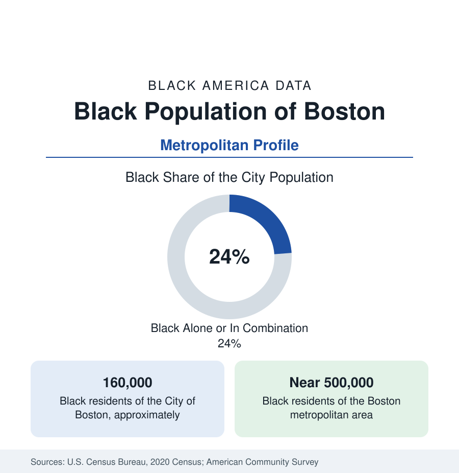

Black Cities
Black Boston: Roxbury, Mattapan, and the Suburban Shift
Boston holds about 160,000 Black residents in the city and near half a million across the metro — an abolitionist-era community reshaped by Caribbean migration. The census profile.

Boston holds about 160,000 Black residents within the city — Black alone or in combination, roughly a quarter of its people — and close to half a million across the metropolitan area, about a tenth of the region. Massachusetts's Black population is the North's oldest continuously documented: free Black Bostonians petitioned against slavery before the republic existed, and Beacon Hill's north slope was a center of abolition. The modern population is distinguished by its composition: Greater Boston holds one of the nation's largest Haitian communities and major Cape Verdean and Afro-Latino populations alongside its native-born base. This article profiles the population in the census data.
The Historic Core: Roxbury, Dorchester, Mattapan
The city's Black geography centers on a contiguous arc of neighborhoods in its southern half. Roxbury is the historic and civic center — home to the region's Black cultural institutions, its mosques and churches, and its political organizations — and remains majority Black. Dorchester, the city's largest neighborhood, holds its largest Black population across sub-districts that range from Caribbean commercial corridors to the historic streets of Uphams Corner. Mattapan, at the city's southern edge, is more than three-quarters Black and the center of Haitian Boston, its Blue Hill Avenue commercial strip operating substantially in Haitian Creole and French. Hyde Park, Roslindale, and Jamaica Plain hold smaller, mixed communities. The South End's historic Black neighborhood was largely displaced by urban renewal in the mid-twentieth century — the displacement pattern this section records in every older Northern city.
The Caribbean Metropolis
Greater Boston's Black population is, by the birthplace data, among the most immigrant of any in this section. Haitian Boston — centered in Mattapan and extending through Brockton, Randolph, and Somerville and Cambridge in earlier waves — is among the two or three largest Haitian communities in the United States. The Cape Verdean community, built on a maritime migration reaching back to the whaling and packet-ship era, centers on Dorchester, Roxbury, and the Southeastern Massachusetts cities of Brockton and New Bedford. Jamaican, Trinidadian, Dominican (counted in the Hispanic Black data), and more recent African communities layer through the same neighborhoods. The aggregate effect in the survey data is a Black Boston that is substantially foreign-born, multilingual, and — in its second generation — among the more educated Black populations of the Northern metros.
The Suburban Ring: Brockton, Randolph, and Beyond
The metro's Black growth is suburban. Brockton, a small city south of Boston, is roughly two-fifths Black — one of the most heavily Black municipalities in New England — with a large Cape Verdean and Haitian population. Randolph, a suburb adjoining the city, is close to half Black and among the most affluent majority-minority suburbs in the region in the survey medians. Stoughton, Milton, Quincy, and the Route 128 belt add growing communities, while Cambridge and Somerville hold smaller, older Black populations under severe housing-cost pressure — the tract data show declining Black counts in the inner core even as the metro total rises, Boston's version of the displacement arithmetic. Lynn, Lowell, and Worcester, the region's older industrial cities, each hold Black populations in the range of a tenth of their totals.
Institutions and Indicators
Black Boston's institutional layer runs through Roxbury Community College, the region's universities' Black enrollment (with no HBCU in New England, a structural absence the education data note), the hospital systems of the Longwood and Dorchester medical corridors — among the largest employers of Black Bostonians — and the state government. The indicators present the region's paradox: Massachusetts records among the nation's strongest Black educational attainment and health outcomes in the state rankings, and Boston's Black median income runs above most Northern peer metros', while its Black-white wealth gap — measured in a famous Federal Reserve study of the Boston metro at a median net worth difference among the most extreme ever published — cautions that income and wealth are different datasets, a lesson the census section's wealth tables generalize.
Reading the Boston Numbers
Boston is the Northern profile in which composition does the most work: abolitionist roots, Great Migration increments, and the North's fullest Caribbean layering in one population of half a million. Its state has no HBCU and no Black-majority city; its Black community is a quarter of its capital and a tenth of its region — and by attainment and health measures, among the strongest-positioned in this reference, against a wealth distribution that tells a different story underneath.
More in Black Cities
Black Atlanta: Population, Distribution, and Growth of a Black Metropolis
Metro Atlanta holds more than two million Black residents — roughly one in three, second only to New York. The suburban distribution, migration history, and composition of Black Atlanta in the census data.
Black New York: The Largest Black Population in America
The New York metropolitan area holds about 3.4 million Black residents — more than any metro in the nation — and the city itself about two million. The census profile.
Black Washington: The District and the Metro
The Washington metro holds about 1.6 million Black residents, and the District itself — long a majority-Black city — now records a Black share near 41 percent. The census profile.
Source: U.S. Census Bureau, 2020 Census; American Community Survey; Population Estimates Program.